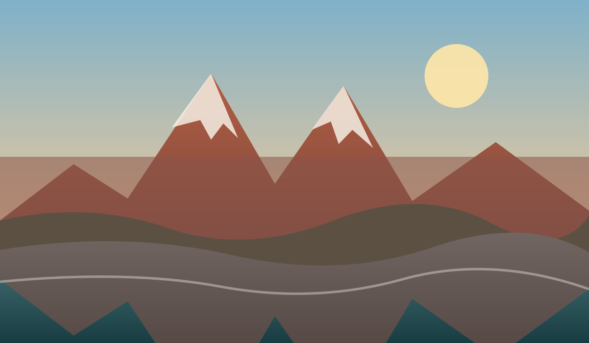
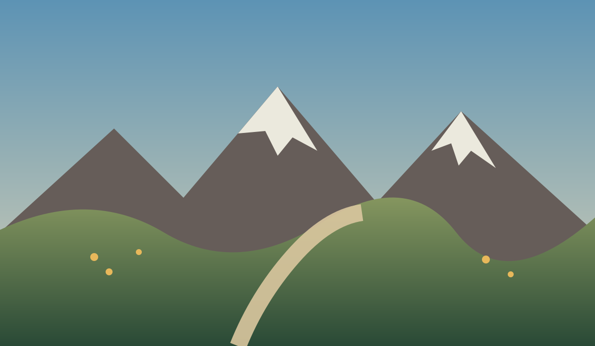
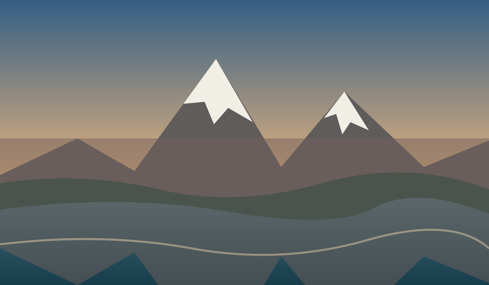
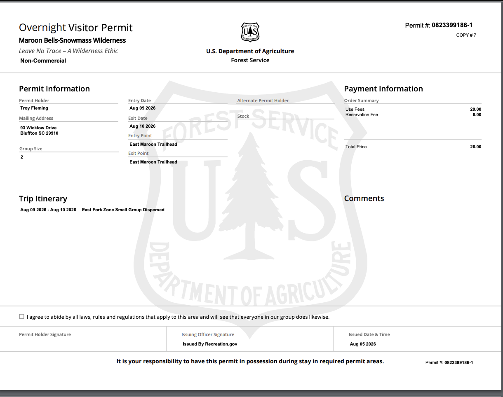
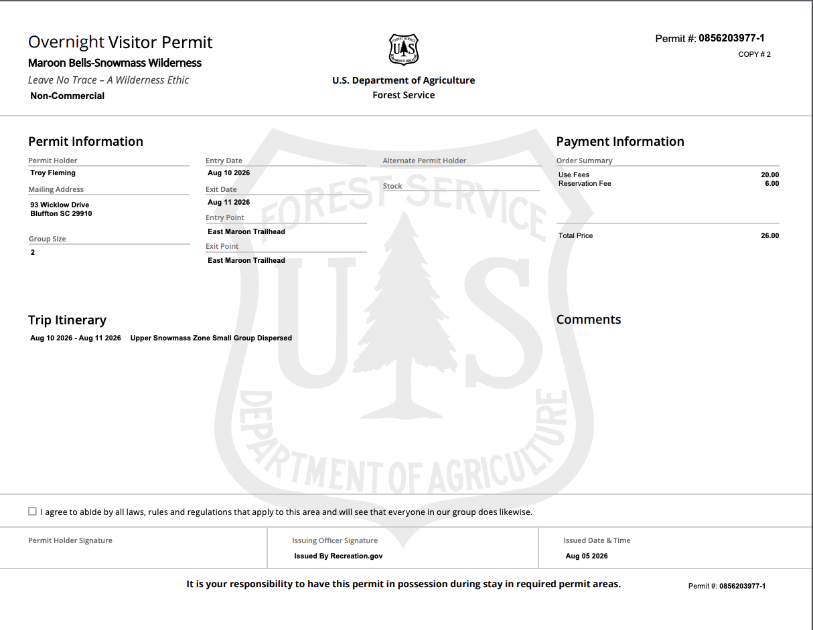

CLOCKWISE
AUG 9–11, 2026
MAROON BELLS–SNOWMASS WILDERNESS
Four Pass Loop
Three days. Two camps. Four passes.
TRIP OVERVIEW
28 miles around the Bells
Maroon Lake Scenic Trailhead → East Fork → Upper Snowmass → Maroon Lake.
0%complete
28.0Miles
4Passes
2Nights
11Photo Stops
TRIP PROGRESS
0 / 15
Milestones completed
Upper Snowmass Zone
TRAIL PRIORITY
Weather comes first
Check the forecast before leaving camp and descend immediately if thunder develops.
TODAY
Your daily trail plan
Everything in the order you will reach it.
SATURDAY · AUGUST 9
Maroon Lake → East Fork
8.2 miles · Buckskin Pass · Estimated finish 2:00–3:00 PM
DAILY MILEAGE8.2 milesMaroon Lake → East Fork Zone
Trip progress8.2 / 28.0 mi
WAKE5:30 AM
START7:30 AM
CAMPEast Fork
☀️Sunrise6:15 AM
🌤️ForecastCheck before trail
Wake up
Breakfast and final gear check.
Shuttle reservation
Have the QR voucher ready for two adults.
🏕️ East Fork Zone
Mile 8.2 · Settle into Night 1.
CAMP TASKS
0 / 4East Fork Zone
Mileage breakdown ⌄
- Maroon Lake → Crater Lake: 1.8 mi
- Crater Lake → Buckskin Pass: 2.7 mi
- Buckskin Pass → Willow Lake: 1.2 mi
- Willow Lake → East Fork: 2.5 mi

SUNDAY · AUGUST 10
East Fork → Upper Snowmass
10.4 miles · Two passes · Estimated finish noon
DAILY MILEAGE10.4 milesEast Fork Zone → Upper Snowmass Zone
Trip progress18.6 / 28.0 mi
WAKE4:30 AM
START5:30 AM
CAMPUpper Snowmass
☀️Sunrise6:15 AM
🌤️ForecastCheck before trail
Wake up
Breakfast and break camp.
Begin hiking
45 minutes before sunrise.
Lunch break
Keep it short if clouds are building.
🏕️ Upper Snowmass Zone
Mile 10.4 · Settle into Night 2.
CAMP TASKS
0 / 4Upper Snowmass Zone
Mileage breakdown ⌄
- East Fork → Frigid Air Pass: 2.8 mi
- Frigid Air → Trail Rider Pass: 2.0 mi
- Trail Rider → Snowmass Lake: 3.4 mi
- Snowmass Lake → Upper Snowmass: 2.2 mi

MONDAY · AUGUST 11
Upper Snowmass → Maroon Lake
9.4 miles · West Maroon Pass · Estimated finish noon
DAILY MILEAGE9.4 milesUpper Snowmass Zone → Maroon Lake Trailhead
Trip progress28.0 / 28.0 mi
WAKE4:30 AM
START5:31 AM
FINISHMaroon Lake
☀️Sunrise6:16 AM
🌤️ForecastCheck before trail
Wake up
Breakfast and break camp.
Begin hiking
45 minutes before sunrise.
🏁 Trip complete
Finish at Maroon Lake Scenic Trailhead.
Mileage breakdown ⌄
- Upper Snowmass → West Maroon Pass: 3.3 mi
- West Maroon Pass → West Maroon Creek: 2.7 mi
- West Maroon Creek → Crater Lake: 1.6 mi
- Crater Lake → Maroon Lake: 1.8 mi
ROUTE
Clockwise around the loop
Tap a waypoint for mileage, elevation, and estimated arrival.
SELECTED WAYPOINT
Maroon Lake Scenic Trailhead
Start · Mile 0.0 · 7:30 AM
PERMITS
Both nights confirmed
Keep signed copies available offline.
✓ CONFIRMED
Night 1East Fork Zone
August 9–10 · 2 hikers

Open full permit✓ CONFIRMED
Night 2Upper Snowmass Zone
August 10–11 · 2 hikers

Open full permitSHUTTLE
Maroon Bells voucher
Have the QR code ready before boarding.
✓ CONFIRMED
2 Adults6:00 AM Shuttle
Sunday, August 9, 2026
GEAR
Pack smart. Keep it light.
Your essentials, grouped and saved.
PACKING PROGRESS
0 / 16 packed
0%